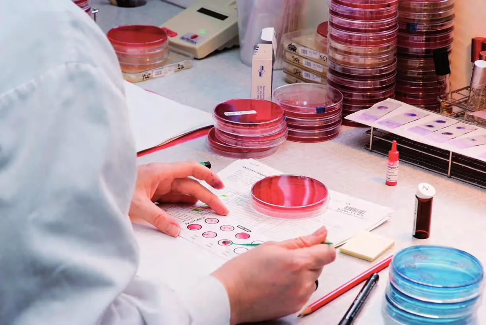

Interview · Swiss Knowhow – HUG Hôpitaux Universitaires de Genève 2011
L'indispensable « U » des HUG
Après plus de deux ans de travail, un nouveau règlement définit et organise les relations entre l’Hôpital et l’Université depuis le 27 janvier 2011. Historiquement fondées sur une base contractuelle, ces relations reposent désormais sur le modèle du partenariat. Le directeur général des HUG, M. Bernard Gruson, et le professeur Jean-Louis Carpentier, doyen de la Faculté de médecine depuis 2003, se sont beaucoup engagés pour faire aboutir cette importante réforme. À la veille de remettre son mandat, en juillet 2011, ce dernier, arrivé à Genève en 1974, vice-doyen de la Faculté de 1999 à 2003, nous a parlé du rôle et de l’importance du « U » dans le sigle HUG.
Qu’est-ce qui a changé dans les relations entre l’Université et l’Hôpital avec l’adoption du nouveau règlement ?
Avant, il y avait d’un côté l’Hôpital et, de l’autre, la Faculté de médecine de l’Université de Genève, et les relations étaient réglées de manière contractuelle. Nous avons opté pour un système de partenariat en créant une interface commune entre les deux institutions. Dans ce nouveau système, le doyen en charge de la Faculté de médecine devient automatiquement directeur de la formation et de la recherche au sein des HUG. Ce rééquilibrage n’est pas un luxe en regard des chiffres : un budget de quelque 160 millions de CHF pour la Faculté de médecine et de 1,6 milliard pour les HUG. Le corps professoral fait notamment partie de l’interface. Au lieu de deux cahiers des charges pour les professeurs, il n’y en a dorénavant plus qu’un seul, qui est signé par les deux entités. Les professeurs sont payés par les HUG pour les activités cliniques et par l’Université pour les activités académiques. Lors des successions professorales, une commission paritaire de prospective et de planification hospitalo-universitaire permet une analyse globale de la situation et met de l’huile dans les rouages.
Pourquoi le choix du partenariat plutôt qu’un autre choix ?
Dans les faits, le « U » n’était pas véritablement sous la responsabilité du doyen dans l’ancien modèle, ce qui n’est plus le cas aujourd’hui. La nouvelle structure concrétise cette réalité que les deux entités forment un couple et précise ce que ce couple possède et doit gérer en commun. Leurs relations vont ainsi moins dépendre de l’entente personnelle des personnes exerçant les responsabilités de l’une et de l’autre entité. Le modèle contractuel, qui était le nôtre, dépend trop du bon vouloir de chacune des deux entités et du poids de chacune d’elle. Pour nous, le modèle du partenariat est le plus équilibré. Nous l’avons préféré à celui qui intègre la Faculté de médecine dans l’entité hospitalière, vers lequel tend par exemple le CHUV. À l’inverse, il existe dans le monde des universités qui possèdent leur propre hôpital.
Entrons un peu dans le « U ».
Qu’en est-il du nombre de professeurs et du nombre d’étudiants ?
La Faculté de médecine de l’UNIGE forme des médecins cliniciens et des chercheurs de haut niveau. Elle est divisée en trois sections, médecine fondamentale, médecine dentaire et médecine clinique, laquelle forme dorénavant une interface avec les HUG.
Sur le budget de quelque 160 millions de francs de la Faculté de médecine, 90 proviennent de l’État et le solde du Fonds national de la recherche scientifique, de fonds européens et de diverses fondations privées.
Quelque 1 400 étudiants fréquentent la Faculté de médecine de l’Université de Genève, dont 900 étudiants prégrades qui suivent une formation de base de 6 ans, débouchant sur le diplôme de médecin. Les études postgrades s’étendent sur des durées de 4 à 6 ans au minimum, parfois plus selon les spécialisations.
La relève académique est-elle assurée ?
Il y a un manque de médecins formés en Suisse dans les hôpitaux universitaires. Il faut aller chercher de plus en plus loin les compétences, surtout dans certains domaines moins attractifs que d’autres. Un effort a été fait depuis quelques années afin d’augmenter significativement le nombre de médecins formés par nos institutions et il commence à porter ses fruits. Cependant, il faut encore parvenir à valoriser la formation dans divers secteurs de la médecine, notamment la médecine de premier recours. À un niveau plus général, il est clair que les médecins de premier recours manquent. De notre côté, nous pouvons par exemple rendre certaines formations plus attrayantes et plus valorisantes.
Quels sont les domaines d’excellence reconnue des HUG ?
Les orientations stratégiques des HUG à l’horizon 2015 ont été définies d’une part en fonction des domaines où nos compétences sont internationalement reconnues, aussi bien sur le plan de l’enseignement que de la recherche médicale, et d’autre part des domaines dans lesquels nous voulons nous inscrire.
Là où nous excellons, l’objectif est de maintenir, voire de renforcer encore nos positions. Il s’agit des neurosciences, de la médecine génétique, des affections hépato-pancréatiques et du diabète, notamment la chirurgie viscérale en termes de transplantation du pancréas et du foie, des affections cardio-vasculaires, de la médecine de l’appareil locomoteur et du sport, des affections complexes de l’enfant et de l’adolescent. Nous voulons nous renforcer et nous développer dans d’autres domaines comme l’oncologie, entre autres les cancers du sein, les maladies de l’appareil locomoteur, notamment la rhumatologie et l’orthopédie avec, en corollaire, un accent plus clinique sur la médecine du sport, ainsi que dans certaines spécialités de la pédiatrie. Attirant des chercheurs du monde entier par son excellence scientifique, la Faculté de médecine s’inscrit dans un vaste réseau de collaborations avec des centres de recherche externes, aussi bien publics que privés.
De quelles forces disposez-vous dans la recherche ?
Il y a quelque 50 à 60 groupes de recherche fondamentale en Faculté de médecine. C’est plus variable du côté clinique, mais près de 200 groupes de recherche sont actifs au total au niveau de l’hôpital. La recherche fondamentale s’inscrit dans une orientation clinique. Les ponts sont nombreux entre recherche fondamentale et recherche clinique dans le cadre de la recherche translationnelle.
N’est-ce pas la quadrature du cercle pour les médecins en formation de concilier l’activité clinique, l’enseignement et la recherche ?
Les personnes qui s’orientent, en plus de leur formation et de leur devoir clinique, vers la recherche, tout en participant à l’enseignement, doivent disposer de temps en suffisance. Nous proposons par exemple des postes de chefs de clinique scientifiques qui attribuent 80 % du temps à la recherche et 20 % à l’activité clinique. Il faut aussi compter avec la mobilité nécessaire impliquant des formations complétées dans d’autres facultés et hôpitaux, notamment à l’étranger. L’idéal serait de disposer de professionnels consacrant 50 % de leur temps à chacune de ces activités.
Dès le 15 juillet 2011, le professeur Henri Bounameaux, ancien chef du département de médecine interne des HUG, succède au professeur Jean-Louis Carpentier à la tête de la Faculté de médecine de l’Université de Genève. L’un des objectifs du nouveau Doyen, directeur de l’enseignement et de la recherche aux HUG, sera d’associer des chercheurs de l’Université, du CMU et de l’École polytechnique fédérale de Lausanne (EPFL) à des groupes de recherche clinique des HUG.
Certifications hors FMH
Dans le cadre des spécialisations, la Faculté de médecine de l’Université de Genève a introduit des « Masters of advances in clinical studies » qui permettent aux étudiants étrangers, notamment hors Union européenne, d’obtenir une certification officielle de leur spécialisation. S’ils n’ouvrent pas à leurs titulaires l’autorisation de pratiquer en Suisse en tant que spécialistes, ces masters leur confèrent tout de même une reconnaissance universitaire valable, notamment dans leurs pays.
De manière générale, l’Université tend à s’impliquer toujours davantage dans la définition et le contenu des formations, très largement placées sous l’autorité et la certification de la FMH (Fédération des médecins suisses).
Texte paru dans Swiss Knowhow – HUG Hôpitaux Universitaires de Genève 2011, p. 16-17, tel que publié dans l'édition imprimée. En cas d'écart, la version imprimée fait foi.
Photos


Articles
Interview · texte intégralL'indispensable « U » des HUG
Une interface nouvelle entre l'Hôpital et la Faculté – avec le professeur Jean-Louis Carpentier (version anglaise incluse)

Interview · texte intégralLa recherche clinique aux HUG
Un centre au service des chercheurs – avec le professeur Bernard Hirschel (version anglaise incluse)
 Dossier
DossierCIBM : une plate-forme de recherche au service de la médecine
Avec le Dr François Lazeyras, directeur du CIBM Genève (version anglaise incluse)
DossierUn centre d'étude en neurosciences unique en Europe
Brain and Behaviour Laboratory (BBL) – avec le professeur Patrik Vuilleumier, codirecteur
DossierDe l'excellence académique au succès économique
UNITEC, dix ans de transfert de technologies – entretien avec Laurent Mieville
DossierThérapies cellulaires en plein développement
SICT, une fondation qui accélère le mouvement – entretien avec la Dre Marisa Jaconi
PublireportageCentre d'imagerie biomédicale (CIBM)
Un modèle de collaboration dans le domaine de la recherche